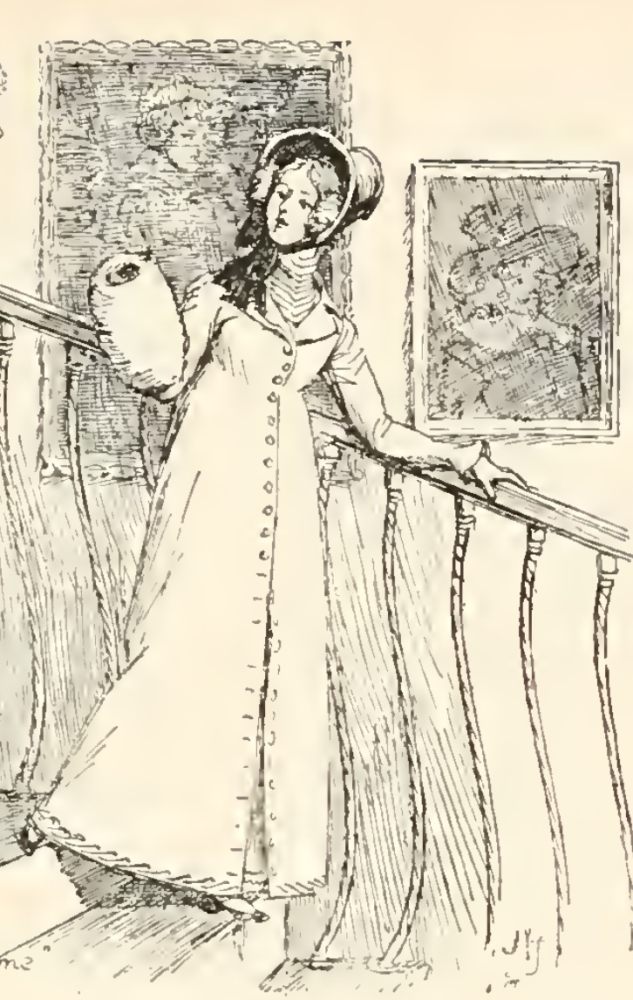
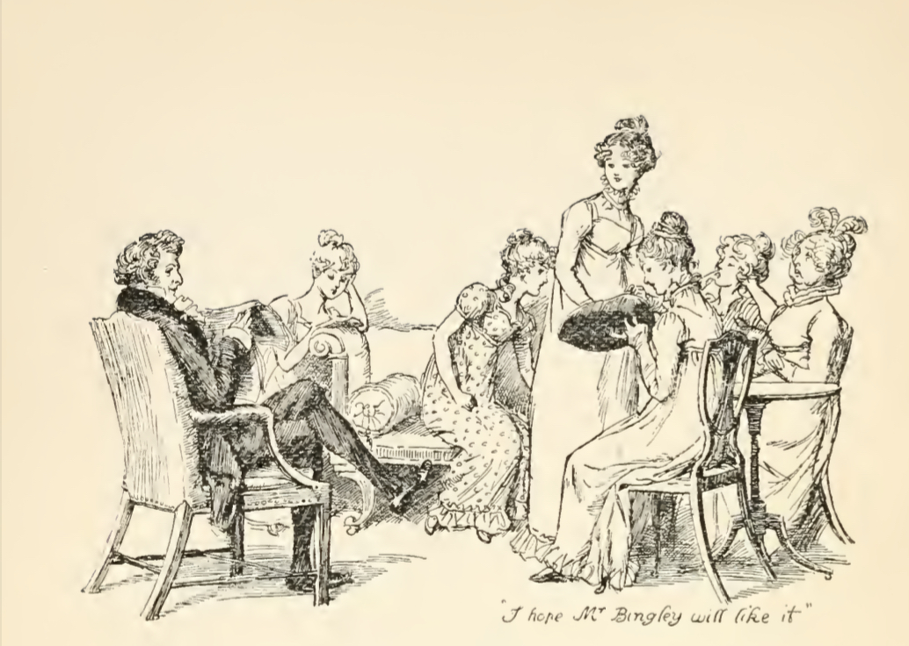

Самая младшая из сестер Беннет, Лидия – легкомысленная и своевольная. Младшая и, без сомнения, наименее зрелая, она всегда действует, исходя из своих прихотей, и совершенно не задумывается о последствиях своих поступков. Лидия Беннет бездумна и кокетлива, ее одержимость флиртом с офицерами полка, импульсивность, недостаток добродетели и приличия приводят к ее побегу с мистером Уикхемом, который мог закончиться катастрофой для семьи. Подробнее об истории с Уикхемом позднее.
Характер Лидии не раскрывается так же постепенно как, например, характеры старших сестер. В самом начале романа читатель сталкивается я с резкой оценкой ее поведения, данной мистером Беннетом. О Лидии и Кэтрин он отзывается так: «Две наших младших дочки — препорядочные дуры» [Остин 1967: 41]. Еще ранее в этой же главе нарраторка называет их «наиболее легкомысленные из сестер» [Остин 1967: 40], описывая их визиты в Меритон. Лидия является второстепенной героиней романа и ее условно можно назвать комической. Исследовательница литературы Великобритании и США Н. М. Демурова в статье «Джейн Остин и ее роман «Гордость и предубеждение» [Демурова 1967: 538–589] высказывает мнение, что писательница описывает характеры героев, руководствуясь усовершенствованной ею теорией «гуморов». Так, Лидия воплощает собой «кокетство». В романе действительно не раз подчеркивается кокетливая натура героини, часто в ее отношении используются слова с негативной коннотацией, в чем мы убедимся далее.

В статье “Стилистические средства раскрытия характеров в романе Джейн Остин «Гордость и предубеждение»” [Палий 2008: 119–136] А. А. Палий в качестве механизмов, благодаря которым создаются образы героев, анализирует авторские замечания, фразы других персонажей и, конечно, слова героев о самих себе. Так, исследовательница анализирует главных героев. Посмотрим, как конструируется образ Лидии Беннет и какие слова звучат в ее адрес. Лидия Беннет – «рослая пятнадцатилетняя девица, с прекрасным лицом, недурная собой» [Остин 1967: 63]. На слова своей матери «хоть ты и моложе всех, но, сдается мне, что танцевать на балу мистер Бингли будет именно с тобой», Лидия уверенно отвечает: «Хоть я и моложе всех, но зато я — самая высокая» [Остин 1967: 12]. Если Элизабет Беннет похожа на отца, то Лидия, по словам нарраторки, копия своей матери в молодости. В этом не раз признается и сама миссис Беннет. Лидия ее «любимица», у них схожи интересы, характеры, речь. В споре со своим мужем миссис Беннет замечает, что было время, когда ей самой «очень нравились красные мундиры» [Остин 1967: 41]. Так, даже сейчас она была бы рада выдать свою дочь за офицера. И мать, и дочь являются обладательницами импульсивного характера. Миссис Беннет «и в голову не приходило, что с младшими дочками не все обстоит благополучно» [Остин 1967: 294], она только поощряет Лидию, чем потакает прихотям дочери и способствует ее избалованности. Что касается речи героинь, лексический состав их всегда прост, здесь читатель не увидит возвышенной литературной лексики. Часто содержание речи Лидии Беннет составляют слухи. Не раз ее реплики сопровождают слова «восклицает», «перебив», они и выдают суть ее характера. Например, в 14 главе первой книги Лидия перебивает мистера Коллинза и обращается к матери со сплетнями: «Вы слышали, мама, дядя Филипс хочет уволить Ричарда? Если он на это решится, Ричарда тут же возьмет к себе полковник Форстер…» [Остин 1967: 94]. Как и миссис Беннет, ее дочь способна «без умолку болтать» [Остин 1967: 105]. «Вечно несдержанная и нередко дерзкая» [Остин 1967: 176] – такие эпитеты использует нарраторка в сторону Лидии, что может подтверждать неодобрительное отношение к героине. Таким образом, как говорилось ранее, Лидии свойственны взбалмошность и эгоцентричность. Миссис Беннет не смущает легкомысленное поведение дочери, а мистер Беннет относится к поведению младшей дочери саркастически и ничем ему препятствует.

Самым ярким поступком Лидии является ее побег с мистером Уикхемом. Тем самым она ставит под огромный риск честь своей семьи. Несомненно, побег Лидии становится существенным двигателем сюжета. Она собирает вокруг своей фигуры почти всех персонажей романа. Все узнают о ее побеге, а потом и о замужестве. По большей мере она сама и способствует распространению этой информации.
Будучи в браке, Уикхем и Лидия продолжают вести беспорядочный образ жизни. Они не умели распорядится своими средствами и «вечно тратили денег больше, чем следовало» [Остин 1967: 530]. Отношение Уикхема к Лидии вскоре после женитьбы стало безразличным, ее привязанность тоже была не так продолжительна. Тем не менее, по словам нарраторки, Лидия «по-прежнему имела полное право на ту репутацию, которая за ней утвердилась после ее замужества» [Остин 1967: 530].
Кэтрин (Китти) Беннет – единственная сестра, с которой Лидия поддерживает относительно близкие и доверительные отношения. Именно ей Лидия говорит о своем побеге с Уикхемом. Кэтрин, вторая младшая дочь четы Беннет, находится под сильным влиянием Лидии, она склонна всегда и во всем следовать последней. Можно сказать, что Лидия, обладая более сильной личностью, занимает преимущественное положение в отношениях со своей старшей сестрой.
Несомненно, Лидия Беннет обладает и положительными чертами характера. Самостоятельная и решительная, героиня наделена природными смелостью и жизнерадостью, которые, так или иначе, развиваются у нее «в самоуверенность благодаря вниманию офицеров, которым ее рекомендовали хорошие обеды дядюшки и врожденное легкомыслие» [Остин 1967: 63]. Да, в контексте романа Лидия предстает как бездумная и ветреная девушка. Тем не менее, общественное осуждение ее поведения и поступков связано и с правилами, которые должна была соблюдать женщина в XIX веке, с ограничениями, с которыми она сталкивалась. Конечно, все это происходит в силу возраста, воспитания и характера, но она единственная из сестер Беннет, которая живет так, как ей хочется, ее не волнует общественное осуждение, и она ничем себя не обременяет.
Библиография:
Демурова Н. М. Джейн Остин и ее роман «Гордость и предубеждение» // Остин Дж. Гордость и предубеждение / Подг. изд. Н. М. Демурова, И. С. Маршак, Б. Б. Томашевский; отв. ред. М. П. Алексеев; пер. с англ. И. С. Маршака // Литературные памятники. М.: Издательство «Наука», 1967. С. 538–589.
Кононова А. С. Женская одежда как психологическая и социальная характеристика персонажа (на примере произведений Дж. Остен) // Вестник Полоцкого государственного университета. Серия А. Гуманитарные науки. 2016. №. 10. С. 49–53.
Палий А. А. Стилистические средства раскрытия характеров в романе Джейн Остин «Гордость и предубеждение» // Вестник Ленинградского государственного университета им. А. С. Пушкина. 2008. №. 2 (10). С. 119–136.